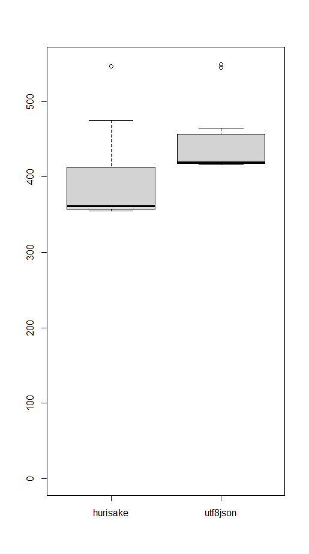
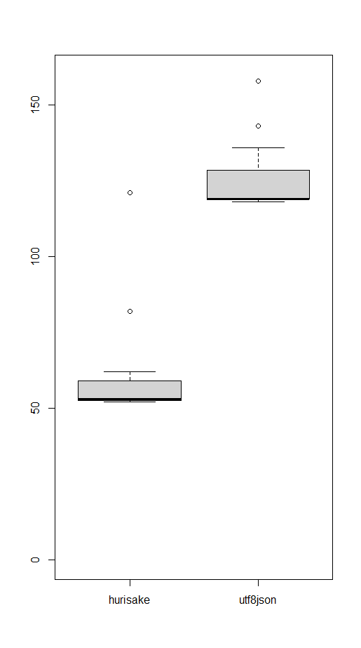

C#向けJSONデシリアライザ Hurisake.JsonDeserializer を作った
この記事は、KLab Advent Calendar 2021 の12/4分です。
作ったもの
- repository: https://github.com/hasipon/Hurisake.JsonDeserializer
- NuGet: https://www.nuget.org/packages/Hurisake.JsonDeserializer/
Unity 2020.3.7 で動作確認しています。
Unlicense なので、自由に copy, modify, publish, use, compile, sell, or distribute しちゃってください。
使い方
Hurisake.JsonDeserializer.Deseriaze(json) でデシリアライズできます。 json は string または byte[] とします。
例えば、 [{"hoge": 42}] をデシリアライズして 42 を取り出すには (int)a[0]["hoge"] でできます。
やりたかったこと
Unity で使えて、スキーマ定義しなくても使える系の JSON デシリアライザを自作しようと思って書きました。
天下一 Game Battle Contest の API サーバで StackExchange.Redis を使っていたときに RedisKey と RedisValue が気に入ったので、影響を受けた設計になっています。
経緯
2017年の話ですが、 MiniJSON を使っていて、サーバに対する負荷試験をC#で書いていたら MiniJSON がボトルネックになった、ということがありました。 @methane さんによると、 System.IO.StringReader の Read や Peek が大量の futex システムコールを発生させていたのが原因でした。 mono の実装が原因だったのかもしれません (未調査) 。
負荷試験は MiniJSON の修正や攻撃台数を増やすことで無事終わったのですが、 JSON デシリアライズが遅いというのはなんとかしたいと思い、更なる高速化に取り組んだ結果、 string インスタンスを作らないようにするのが一番効くという結論に至りました。可能な限り byte[] のまま処理して、Dictionary インスタンスの生成を避けたり、 JSON の object の key はハッシュ値にして比較したりといった高速化を実装し、改良版 MiniJSON 実装と比較して 4 倍くらい高速になることは確認しました。 Hurisake.JsonDeserializer には、それなりに違う形にはなっていますが、このときの経験を反映させています。
余談
ICFPC 2017 で 2 位になったのは、こんな感じで JSON 処理を自前で書いたのも、タイムアウトせずに最終ラウンドまで残れた一因では、という疑いを持ってたりします。ちょうど上記の高速化をやってた時期だったので、調子に乗って実装していた記憶があります。
性能比較
neuecc/Utf8Json の Utf8Json.JsonSerializer.Deserialize<dynamic> と雑に比較しました。同じぐらいの時間でデシリアライズでき、 Hurisake.JsonValue は dynamic より高速な要素参照を実現できています。
計測プログラム： 2つのキーを持つ object 30万要素の array をデシリアライズし、一方の値を合計する。
計測環境：
Amazon EC2 t3.micro
Ubuntu Server 20.04 LTS (HVM), SSD Volume Type - ami-059b6d3840b03d6dd (64-bit x86)
dotnet 5.0.201
Deserializeの時間比較： (単位: ミリ秒、試行回数15回)

要素参照の時間比較： (単位: ミリ秒、試行回数15回)

Unity 対応の話
最初 Unity を気にせずに書いてしまっていて、 System.Collections.Immutable とか ReadOnlySpan を使っていたら、 Unity では使えなかった🙃 となりました。使う方法はあるっぽいですが、 Hurisake.JsonDeserializer は無くても動くように修正してあります。
Hurisake って何？
「天の原ふりさけ見れば春日なるみかさの山に出でし月かも -- 阿倍仲麻呂」から取ってます。小倉百人一首から「でし」を含む歌を選びました。深い意味は無いですが、検索しやすいようにする意図はあります。後付けですが、転勤して帰郷した今年の自分に合っている和歌な気もします。
おわりに
指摘・意見歓迎です。もしありましたら Issues にお願いします。